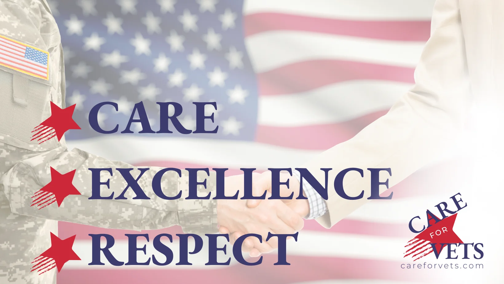
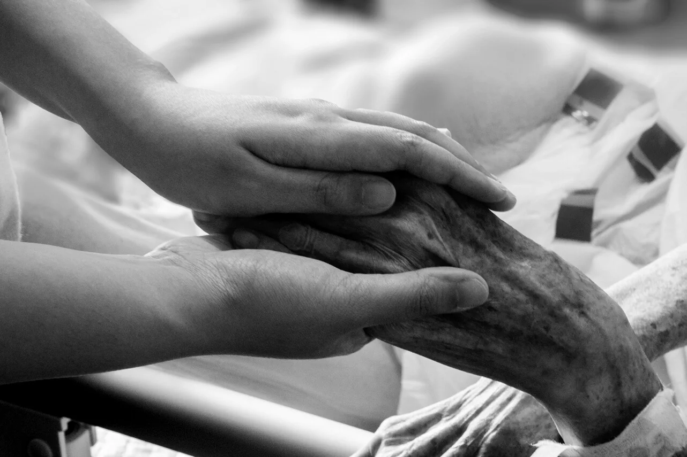

Serve veterans with the same discipline, dignity and follow-through they gave in service.
CareForVets is building a veteran-centered model for care navigation, referral coordination and future skilled home health services—designed around the realities veterans and their families face after the referral is made.

A simpler path from referral to reliable care.
Veterans should not have to become experts in authorizations, handoffs and home health operations just to receive timely care. CareForVets is being designed to reduce that friction.
Veterans & families
Clear navigation, practical communication and a human point of contact focused on what happens next.
See the veteran experience →Referral partners
Structured intake, authorization tracking and closed-loop communication for organizations referring veterans to care.
See partner workflows →Future home health
A lean, technology-enabled skilled home health model designed for disciplined operations, continuity and regulatory readiness.
See the planned model →
Human where it matters. Disciplined where it counts.
The original CareForVets brand was built on the belief that veterans deserve more than a transaction. The same idea applies to healthcare.
- Care means listening, communicating and reducing unnecessary friction.
- Excellence means reliable processes, measurable follow-through and high standards.
- Respect means protecting veterans' time, choices, privacy and independence.
Interested in the model?
We welcome conversations with veterans, families, clinicians, referral sources and organizations interested in improving the transition from authorization to care at home.